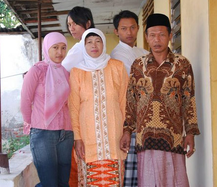

Mempekerjakan keluarga, bisa nggak?
 Dari Dewi:
Dari Dewi:

Reproduced with the permission of Nuri Abidin.
Brendon dan Dewi kemarin chatting tentang soal mempekerjakan keluarga. Menarik sekali. Inilah transcript chat kami.

Dewi: Trims ya Brendon … Kalau orang tua Brendon mempunyai bisnis, kenapa Brendon nggak diterima di bisnis itu saja? Di Indonesia, orang lebih suka mempekerjakan anggota keluarga sendiri. |
 Brendon: Hai Dewi... Mempekerjakan anggota keluarga itu disebut nepotisme, 'kan? I remember something about KKN (Korupsi, Kolusi dan Nepotisme) being a BIG issue in Indonesia. Brendon: Hai Dewi... Mempekerjakan anggota keluarga itu disebut nepotisme, 'kan? I remember something about KKN (Korupsi, Kolusi dan Nepotisme) being a BIG issue in Indonesia.
|
| Dewi: Ya... Pada tahun 1998, istilah KKN itu sering didengar, karena mantan Presiden Soeharto memberi kontrak bisnis kepada anaknya, bukan orang lain. Jadi anaknya sangat kaya sekali, dan negara Indonesia menderita krisis moneter, atau krismon. |
Brendon: Here it's kind of frowned on for you to employ family members unless it really is a small family business. If it's a bigger company, no way. |
| Dewi: Di Indonesia, orang lebih senang kalau bisa mempekerjakan anggota keluarga. Mereka bisa mempercayainya. Dan orang tua wajib membantu anaknya. |
Brendon: Anu … saya lebih suka independent. |
Dewi: Ya, itu kebudayaan Barat, kan? Lebih suka berdikari. Konsep kekeluargaan lebih kuat di Indonesia. |
Brendon: Bagaimana tips yang saya post kemarin? Berguna, nggak? |
| Dewi: Ya, sangat berguna. Saya kira banyak persamaan dengan proses wawancara di Indonesia. Tapi di Indonesia, harus berhati-hati dengan sapaan yang dipakai, dan juga bahasa yang dipakai. Jangan pakai bahasa gaul. |
Brendon: Jadi, apa yang harus saya katakan? |
Dewi: Kamu harus pakai sapaan ‘Bapak’ atau ‘Ibu’ sebagai tanda hormat. Dan 'saya' untuk diri Brendon sendiri. |
Brendon: Baiklah, terima kasih… |
Diposting pada jam 20:45.